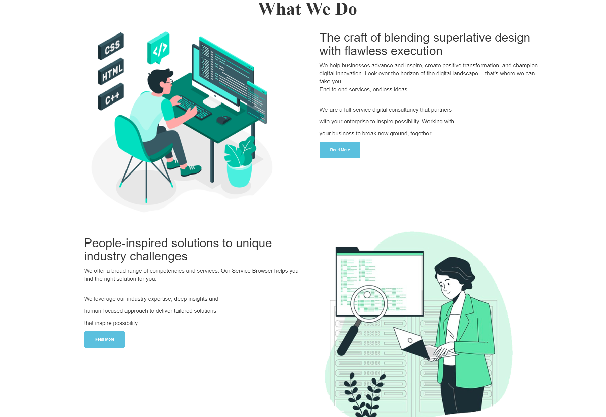
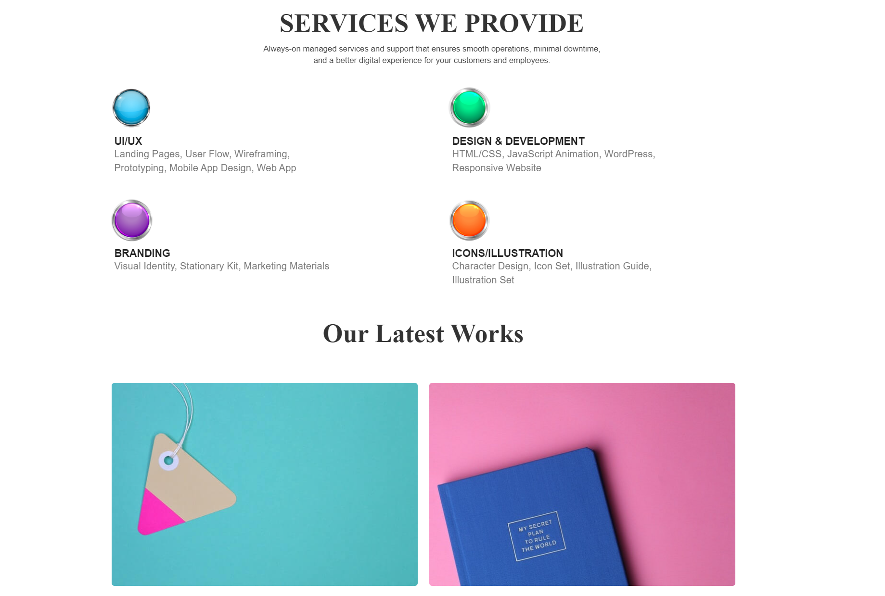
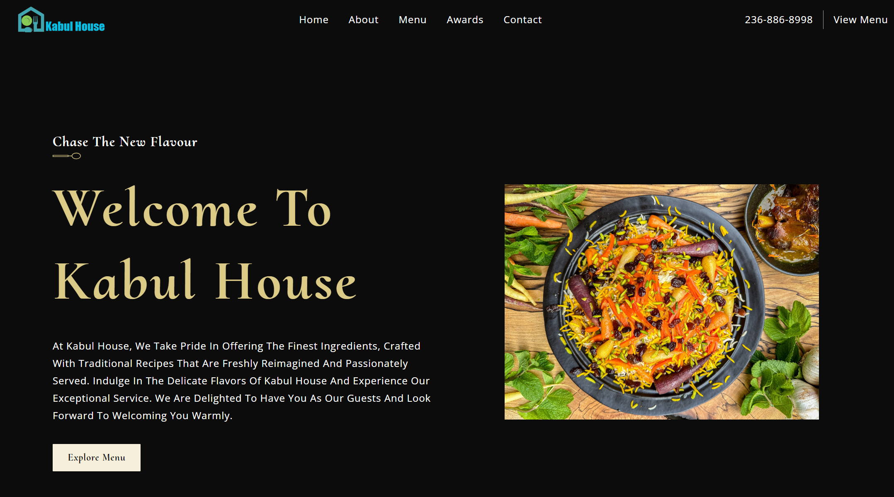

Local Business Websites
Clean websites for salons, contractors, cleaners, clinics, tutors, restaurants, consultants, and other local service businesses.
- Mobile-first homepage and service pages
- Clear calls-to-action
- Contact, quote, or booking forms
Websites and SEO for local businesses
I am Barkat Kamran, a software engineer in British Columbia. I help small businesses turn weak websites into fast, mobile-friendly, Google-ready pages built to earn calls, bookings, and trust.
What I solve
Most small business websites lose customers because they are slow, unclear, weak on mobile, or hard for Google to understand. I fix the practical pieces first: message, structure, technical SEO, forms, and trust signals.
Services
Start with a focused audit or fix, then grow into a stronger website and ongoing support.
Clean websites for salons, contractors, cleaners, clinics, tutors, restaurants, consultants, and other local service businesses.
SEO cleanup for sites that are indexed poorly, missing metadata, or confusing Google.
Ongoing support for updates, reports, new content, analytics checks, and small improvements.
Why this works
Next.js, React, JavaScript, PHP, MySQL, Firebase, APIs, and deployment experience.
SEO basics that matter: crawlable pages, metadata, sitemap, schema, internal links, and Search Console.
Focused on calls, forms, bookings, and customer trust instead of decoration alone.
Selected work
These examples show website design, SEO repair, content structure, booking flows, and business-focused messaging.
Improved crawl quality, sitemap generation, robots.txt, category SEO, canonical tags, internal links, and Search Console readiness for a content website with 70+ indexed pages.
Visit site
Built a polished event decor website with visual albums, packages, booking flow, and clear paths from inspiration to inquiry.
View repo
Reworked a trade-service website around service lines, trust signals, building types, quote intent, and clearer conversion messaging.
View repo
Starter pricing
These are practical starting points. Final pricing depends on the site size and scope.
For businesses that already have a website but need Google and mobile basics fixed.
For businesses that need clearer pages, better trust, and stronger calls-to-action.
For businesses that want updates, analytics checks, and steady improvement after launch.
Process
Free mini audit
If you own a small business, or know someone whose website is not bringing enough calls, email me the URL and I will review it.